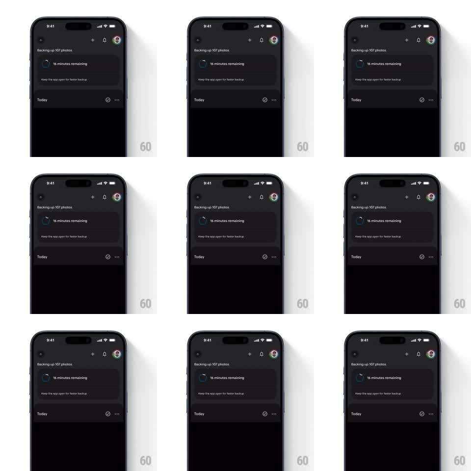

Media
Frame-by-frame

Rebuild this animation 1:1: Google Photos' backup spinner - a small circular progress ring beside "16 minutes remaining" that rotates while its stroke organically wiggles and deforms, signaling an active background backup.

Rebuild this animation 1:1: Google Photos' backup spinner - a small circular progress ring beside "16 minutes remaining" that rotates while its stroke organically wiggles and deforms, signaling an active background backup. ## Integration Integration: stack-agnostic spec - springs given as stiffness/damping, timed motions as duration + curve; map every value to your framework and animation library of choice. ## Scene Dark Google Photos backup state: "Backing up 107 photos" header, a card containing the small wiggly circular progress ring, "16 minutes remaining" label, and "Keep the app open for faster backup" subtext; below, the "Today" library section. The spinner is the only motion on screen. ## Motion spec Pattern: rotating ring with organic stroke deformation. - The ring (a circle arc ~22pt diameter, 3pt stroke, blue) rotates continuously (~1.4s per revolution, linear). - As it rotates, the stroke deforms: radius wobbles sinusoidally (+-1.5pt) with 3-4 lobes, and the arc length breathes (trim 25% -> 70% -> 25% of circumference, 1.4s, ease-in-out) - the classic indeterminate spinner, but with a hand-drawn wobble on the path. - The wobble phase is tied to rotation so the deformation travels around the ring, giving a liquid feel. - The ring's head is rounded (round linecap); no track circle behind it. ## Calibration - The deformation is subtle - amplitude never exceeds half the stroke width's visual weight; it should read as lively, not broken. - Everything else on the screen is static; the spinner carries all liveness. ## Reduced motion Replace with a standard rotating arc (no deformation), or a static arc at 60% trim. ## Don't miss - The wobble must travel with the rotation, not pulse in place - that is what makes it organic. - Keep the ring small and inline with the label; it is a status affordance, not a hero.